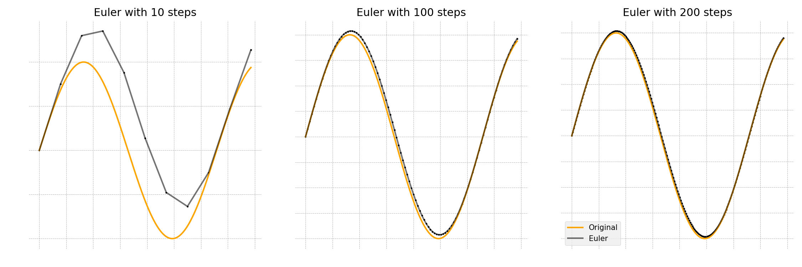
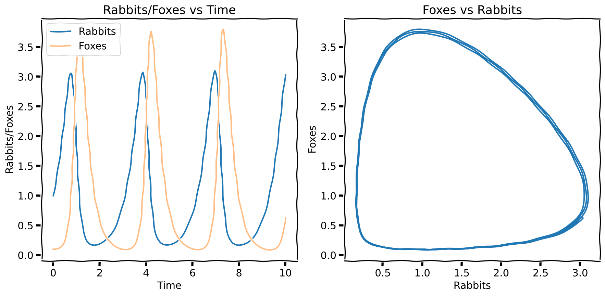
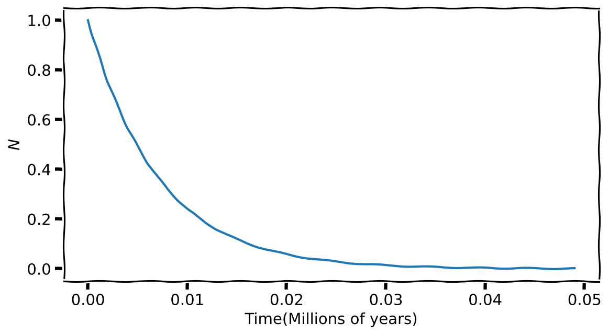
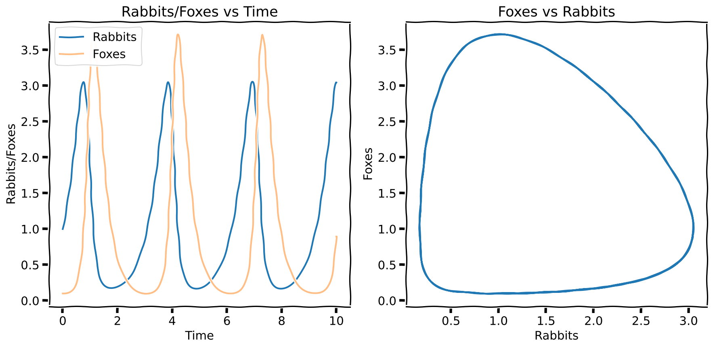

def logistic(time, N0, carrying_capacity, rate):
'''
This outputs the exact solution to
the logistic differential equation.
'''
C = 1/N0-1/carrying_capacity
output = (1+C*carrying_capacity*np.exp(-rate*time))
output = carrying_capacity/output
return output
N_stop_difference = 1E-2 # Stop running if the change in population
# between consecutive runs is less than this value
dt = .1
N0, K, rate = 10, 100, 3
data = {'time': [], 'N': []}
time, N = 0, N0
while True:
data['time'].append(time)
data['N'].append(N)
dN = rate*N*(1-N/K)*dt
N += dN
time += dt
# Should we stop the loop?
try:
# The lists start empty so the following will raise an
# error the first two rounds. I am using try to get around it.
if np.abs(data['N'][-1]-data['N'][-2]) <= N_stop_difference:
break
except IndexError:
# I am being paranoid and checking if there is an error even
# when the list has more than two elements
if len(data['N']) < 2:
pass
else:
print('Trouble')
quit()
exact_data = logistic(time=np.array(data['time']),
N0=N0,
carrying_capacity=K,
rate=rate)
plt.plot(data['time'], data['N'], '.', label='Numerical')
plt.plot(data['time'], exact_data,
label='Exact', zorder=1) # zorder pushes the plot back
plt.legend(loc='lower right')
plt.ylabel('Population($N$)')
plt.xlabel('Time')
plt.hlines(K, 0, data['time'][-1],
colors='grey', ls='dashed', zorder=1)Numerical Solutions (Good)
What to expect in this chapter
In the previous chapter, I showed you how to solve differential equations using the Euler method. In this chapter, I will take a step back and try to offer more details about differential equations and the Euler method. I am doing this now (than earlier) because I hope you have more context based on what we did in the last chapter. I will then show you how to solve more interesting coupled systems (e.g. predator-prey) and end the chapter by introducing some routines from the package SciPy that you can use when you want speed.
1 Differential Equations and Euler
1.1 What do we mean by changes?
I have often mentioned that differential equations allow us to model systems that change. They also help us capture some of these systems’ essential dynamical features. However, these changes do not necessarily need to be in time. Here are some examples of what we mean by ‘change’:
- change in elevation as you walk along mountainous terrain,
- change in the nutrients in the soil as you walk along a field,
- change in nutrients as we dive into the ocean,
- change in the concentration of a medicine in our blood as the day progresses,
- change in the brightness of sunlight as the day progresses,
- change in the population as time passes.
- changes in how fast a chemical reaction occurs as the reagents’ concentration is depleted.
The first three examples relate to change in space while the latter three to changes in time. The last is a change in concentration. So, a system can change in almost any parameter that is available!
1.2 Calculus: Meaning and Notation
To get the most out of differential equations, you must speak the language of calculus. This is because calculus allows us to describe changes mathematically. I will use a concrete example of a changing population to see how this works. Incidentally, this is a problem people thought about and solved about 200 years ago!
So, where to start? What is a simple model for the change of a population? We can start by assuming that the change in a population will depend on the current size of the population. The justification for this is that fewer people now will mean fewer people later, or more people now will mean even more people later. We can express this idea succinctly as:
\[ \dfrac{dN(t)}{dt} = r N(t)\qquad\qquad\qquad\qquad\text{(1)} \tag{1}\]
Here \(N(t)\) is the number of people at time \(t\) where \(t\) is time measured in a convenient unit, say years. \(\frac{dN(t)}{dt}\) tells us how much the \(N(t)\) is changing. \(r\) is a constant (i.e. a simple number) representing the rate of growth. \(r\) is useful to distinguish between different types of populations (e.g. opulent ones with large \(r\) vs. less fortunate ones with lower values of \(r\)). To make it easier to read, we will write \(N\) instead of \(N(t)\), but keeping in mind that time \(t\) lurks in the background.
The symbol \(\frac{dN}{dt}\) on the LHS is read as rate of change of \(N\) with respect to \(t\). The rate (i.e. \(\frac{dN}{dt}\)) tells us how much \(N\) will change if we increase \(t\) by a unit (i.e. 1).
1.3 Calculus: Getting a feel for \(\dfrac{dN}{dt}\)
If you like, you can get a feel for what this equation is saying by approximating the symbol as a fraction1.
\[ \dfrac{dN}{dt} \approx \dfrac{\Delta N}{\Delta t} \Rightarrow \Delta N = r N\;\Delta t\qquad\qquad\qquad\qquad\text{(2)} \tag{2}\]
Please note the approximate sign(\(\approx\)). Our approximation gets better the smaller we make \(\Delta t\). Remember, you already saw this in action in the bucket example. We can use this approximation to build up how \(N\) will change as follows:
| Time | Population | Change for next step |
|---|---|---|
| \[t= 0\] | \[N_0\] | \[\Delta N = rN_0 \times \Delta t\] |
| \[t= \Delta t\] | \[N_1 = N_0 + \Delta N\] | \[\Delta N = rN_1 \times \Delta t\] |
| \[t= 2\, \Delta t\] | \[N_2 = N_1 + \Delta N\] | \[\Delta N = rN_2 \times \Delta t\] |
| \[t= 3\, \Delta t\] | \[N_3 = N_2 + \Delta N\] | \[\Delta N = rN_3 \times \Delta t\] |
| \[\ldots\] | \[\ldots\] | \[\ldots\] |
Note that \(N_0\) is the starting population at \(t=0\). So what we want to know is how the population will evolve from there.
Remember
Remember that \(\dfrac{dy}{dx}\) tells us how much \(y\) changes if you change \(x\) by a unit. You can make sense of \(\dfrac{dy}{dx}\) by thinking of the approximation \(\dfrac{\Delta y}{\Delta x}\).
This approximation gets better the smaller the step.
Stopping a population explosion
You will notice that our ‘model’ says the population will keep growing faster and faster. But, this is unrealistic as other factors (such as resources) should come into play. So, an improved model for a population is2:
\[ \dfrac{dN}{dt} = r N \left(1- \dfrac{N}{K}\right)\qquad\qquad\qquad\qquad\text{(3)} \tag{3}\]
Here \(K\) (called the carrying capacity) represents the maximum population that the system can hold sustainably. You should note how the equation (elegantly) leads to a reduction in population when the population exceeds the carrying capacity(i.e. \(N > K\)). When \(N > K\) the R.H.S. becomes negative, and the population starts to decrease!
2 Solving Differential Equations
Equations like (1) and (3) are called differential equations because they feature one or more differential terms (such as \(\frac{dN}{dt}\)). What we mean by solving a differential equation is to find a mathematical function that satisfies it3.
A solution to a differential equation can either be analytical (i.e. like \(y(t) = 3t^3 + 5t\)) or numerical (i.e. a list of \((t,y)\) numbers). The Euler method is one of the simplest and most intuitive ways to solve a differential equation numerically.
2.1 The Euler Method
The Euler Method4 created by the prolific Leonhard Euler is based on equation (2). Here is the recipe that Euler proposed\(\ldots\). I recommend you recall and draw parallels to how we solved our previous bucket problem. This is the one and the same method!
Let’s say we want to solve the differential equation
\[ \dfrac{dy}{dt} = f(y,t) \]
We approximate it with a fraction:
\[ \dfrac{dy}{dt} \approx \dfrac{\Delta y}{\Delta t} = f(y,t)\Rightarrow \boxed{\Delta y= f(y,t)\Delta t} \tag{4}\]
We can then start with an initial value (condition) \(y(t=0) = y_a\) and take small steps away like:
\[\begin{array}{c|rcl|rcl}
\text{Initial condition} & y_0 &=& y_a & t_0 \\
\text{Step 1}& y_{1} &=& y_{0} + f(t_0,y_0) \Delta t & t_1 &=& t_0 + \Delta t\\
\text{Step 2}& y_{2} &=& y_{1} + f(t_1,y_1) \Delta t & t_2 &=& t_1 + \Delta t\\
\text{Step 3}& y_{3} &=& y_{2} + f(t_2,y_2) \Delta t & t_3 &=& t_2 + \Delta t\\
& \ldots &=& \ldots & \ldots &=& \ldots \\
\text{Step $n+1$}& y_{n+1} &=& y_{n} + f(t_n,y_n) \Delta t & t_{n+1} &=& t_{n} + \Delta t\\
\end{array}\]
When we follow this recipe, we can get the numerical values of the solution. The more steps we have, the more accurate our values are. This is shown in the figure below. Again, you saw this in action with the bucket example.

Finally, I would like to point out that irrespective of how complicated the system or problem is, the strategy you will adopt is the same simple one: Euler!
2.2 Using Euler for the logistic equation
Let’s solve equation (3) using Euler to see how things work. Luckily for us, this equation can also be solved analytically. So, we can compare how Euler fairs with the ‘real’ solution. Here is the analytical solution:
\[ N(t) = \dfrac{K}{1+\left(\dfrac{K}{N_0}-1\right)e^{-rt}} \tag{5}\]

Some things to note about the code
I like to draw your attention to some programmatically features in the above code that you may not have seen before:
- I have used a dictionary to hold the time and population data. Isn’t it more elegant?
- I use a
Truecondition with thewhileloop. So, it will run until the end of The Universe until Ibreakout on my own. - To break out, I check if the population has changed significantly?
- The threshold I am using is \(0.01\). To check this, I do not compare the two numbers (Never ever compare two floats!). Instead, I check if the difference between the two is as small as I want.
- I use
np.abs()to not worry if the difference is negative.
- Since I need to compare two numbers, I will have to wait for at least two rounds for the condition to work. I use
try-exceptto step around the hissy-fit that Python would otherwise throw.- I know what error (
IndexError) to use because when I didn’t, Python screamed it at me!
- I know what error (
3 Coupled Differential Equations: Predator-Prey Model
3.1 The equations
In this section, I will show you how to solve coupled differential equations. The one I have picked is called The Predator-Prey model. It is a simple (really cool) ecological model to describe the predator-prey interactions between foxes and rabbits. You will often see variants of the Predator-Prey model used to study more complicated systems.
The basic equations that describe this model are the Lotka-Volterra equations.
\[ \begin{aligned} \dfrac{dr}{dt} &= \alpha r - \beta rf \\ \dfrac{df}{dt} &= \delta fr - \gamma f \end{aligned} \]
I have chosen \(r\) to represent the rabbits (the prey) and \(f\) foxes (the predators). \(\alpha, \beta, \delta, \gamma\) are constants. For our simulation, we will use the values shown below.
| \(\alpha\) | 2 |
| \(\beta\) | 2 |
| \(\delta\) | 3 |
| \(\gamma\) | 3 |
3.2 Example code

max_time = 10
dt = 0.001
rabbits0, foxes0 = 1, .1
time, rabbits, foxes = 0, rabbits0, foxes0
data = []
# Lotka-Volterra equations
def drabbits_dt(rabbits, foxes):
a, b = 2, 2
return a*rabbits - b*rabbits*foxes
def dfoxes_dt(rabbits, foxes):
d, g = 3, 3
return d*foxes*rabbits - g*foxes
while True:
data.append([time, rabbits, foxes])
# Don't update the original variables because we need
# the OLD values of rabbits to calculate foxes
rabbits_new = rabbits + drabbits_dt(rabbits, foxes)*dt
# Using the old value of rabbits
foxes += dfoxes_dt(rabbits, foxes)*dt
# No more need for two variables
rabbits = rabbits_new
time += dt
if time > max_time:
break
# Reorganising the data so I can easily access
# them without having to mess with indices
data = np.array(data)
data = {
'time': data[:, 0],
'rabbits': data[:, 1],
'foxes': data[:, 2],
}
fig, ax = plt.subplots(nrows=1, ncols=2)
ax_with_time, ax_with_other = ax
# Plotting the individual species
ax_with_time.plot(data['time'], data['rabbits'], label='Rabbits')
ax_with_time.plot(data['time'], data['foxes'], label='Foxes', alpha=.5)
ax_with_time.set_ylabel('Rabbits/Foxes')
ax_with_time.set_xlabel('Time')
ax_with_time.set_title(f'Rabbits/Foxes vs Time')
ax_with_time.legend()
# Plotting one against the other
ax_with_other.plot(data['rabbits'], data['foxes'])
ax_with_other.set_xlabel('Rabbits')
ax_with_other.set_ylabel('Foxes')
ax_with_other.set_title(f'Foxes vs Rabbits')This is a beautiful result. Notice that both the predator and prey show a cyclical trend over time. The rabbit population is the lowest when the foxes peak because of all the feasting. Past this, the foxes start going hungry, reducing their numbers and giving the rabbits a chance to make a comeback. And so the cycle goes on. The plot on the right (called a ‘phase plot’) is my favourite. It shows all the information I just stated. Do you see it? Can you figure out which direction (clockwise or counterclockwise) the flow of time represents?
Some things to note about the code
I want to highlight a few things about the above code:
Notice how I encapsulated the derivatives in functions. This way of doing things allowed me to worry about what was happening in the loop without any distractions.
I had to use a new variable
rabbit_newto hold the new value of rabbits temporarily. This is because I still need the old value (contained inrabbits) to calculate the new value forfoxes. This is a tad subtle; make sure you are comfortable with it!This time, I first used a list
datato collect the data and split them into a dictionary later. Some might consider this unnecessary. But it makes the code more readable
4 Hello SciPy
Before we wrap up, I like to show you how to use a standard solver from Sci Py. While Euler is good for getting started and gaining insight, it is seldom used for real work because it has several drawbacks. Instead, people invariably use more accurate and efficient methods like Runge-Kutta.
Let me rework the radioactivity, logistics and predator-prey examples.
4.1 SciPy odeint()
The SciPy function I will use is called odeint(). You can import it as follows:
from scipy.integrate import odeintYou get it working by giving it the initial values and functions to calculate the various derivatives. So, if your differential equation is of the form:
\[ \dfrac{dy}{dx} = f(y,x) \]
We need to have a Python function that returns \(f(y,x)\) to give odeint(). I have intentionally written \(y\) before \(x\) here because odeint() expects the dependent variable first and the independent variable after. odeint() allows us to pass other optional variables too. I will now show you how all of these work.
Please note that I haven’t shown the code for the plotting because it is identical to that from the non-SciPy examples.
4.2 Radioactivity

max_time = 0.05
dt = .001
decay_constant = 142 # For 85 Rb (per Myr)
N0 = 1 # Starting value of N (in billions of atoms)
def dNdt(N, time, decay_constant):
'''
Function for the derivative.
'''
return - decay_constant*N
all_time = np.arange(0, max_time, dt)
all_N = odeint(y0=[N0], # Initial values
func=dNdt, # Function for the drivative
t=all_time, # Time span
args=(decay_constant,) # Any arguments to dNdt
)4.3 Logistic Equation

def dNdt(N, time, rate, carrying_capacity):
'''
Function for the derivative.
'''
return rate*N*(1-N/carrying_capacity)
max_time, dt = 3, .1
N0, K, rate = 10, 100, 3
data = {}
data['time'] = np.arange(0, max_time, dt)
data['N'] = odeint(dNdt, N0, data['time'], (rate, K))4.4 Predator-Prey

max_time = 10
dt = 0.001
rabbits0, foxes0 = 1, .1
# Lotka-Volterra equations
def dy_dt(y, t):
'''
Function for the derivative.
- y contains all the variables for the simulation
- t is the dependant variable
'''
rabbits, foxes = y
# Rabbits
a, b = 2, 2
drabbits_dt = a*rabbits - b*rabbits*foxes
# Foxes
d, g = 3, 3
dfoxes_dt = d*foxes*rabbits - g*foxes
return [drabbits_dt, dfoxes_dt]
data = {}
data['time'] = np.arange(0, max_time, dt)
# Note the order I pass the rabbit and fox information
results = odeint(y0=[rabbits0, foxes0], # Dependant variable
func=dy_dt, # Derivatives
t=data['time'] # Independant variable
)
# Extract the individual results (Note, the order matters)
data['rabbits'] = results[:, 0]
data['foxes'] = results[:, 1]Footnotes
I want to highlight that \(\dfrac{dN}{dt}\) is a symbol and \(\dfrac{\Delta N}{\Delta t}\) is a fraction. So you cannot dismantle a symbol!↩︎
This model is due to Verhulst and is often called the Logistic Model.↩︎
‘Satisfying’ means substituting the solution leads to LHS = RHS↩︎
If you are a movie buff, the movie ‘Hidden Figures’ is about how Katherine Johnson plans NASA’s trip to the moon. She used the Euler method for this.↩︎